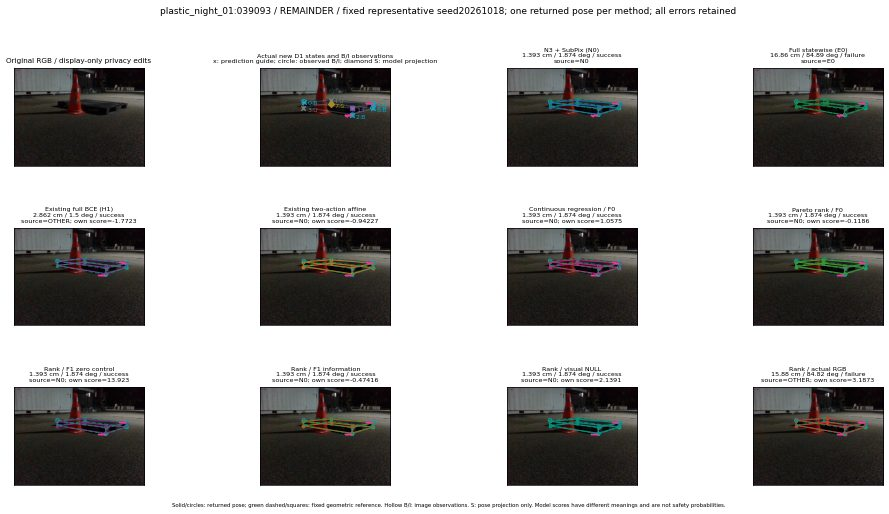

실선은 반환 자세, 초록 점선은 고정 기하 참조입니다. S는 영상 관측이 아닙니다. 점수는 모델별 의미가 다르며 보정된 안전 확률이 아닙니다. 개인정보 처리는 표시 사본에만 적용했습니다.
| 방법·seed | 위치 / 회전 / 공동성공 | 실제 출처 | 선택 후보 | 각 모델 자체 점수 |
|---|---|---|---|---|
| N0 | 1.393 cm / 1.874 deg / success | N0 | N/A | N/A |
| E0 | 16.86 cm / 84.89 deg / failure | E0 | N/A | N/A |
| E0_REGENERATED | 16.86 cm / 84.89 deg / failure | E0 | E0_REGENERATED | N/A |
| POSEFIX_SUBPIX_PF_ANCHOR | 2.178 cm / 1.861 deg / success | OTHER | N/A | N/A |
| POSEFIX_SUBPIX_YOLO_ANCHOR | 2.178 cm / 1.861 deg / success | OTHER | N/A | N/A |
| D1_H1_MLP_s20261018 | 2.862 cm / 1.5 deg / success | OTHER | WD0/ORIGINAL_WD/selected | -1.7723441123962402 |
| D1_H1_MLP_s20261019 | 16.43 cm / 84.79 deg / failure | OTHER | G10/SWAPPED_WD/selected | -1.8457942008972168 |
| D1_H1_MLP_s20261020 | 2.862 cm / 1.5 deg / success | OTHER | WD0/ORIGINAL_WD/selected | -2.108891487121582 |
| D1_H1_PAIR_MLP_s20261018 | 1.393 cm / 1.874 deg / success | N0 | N0 | -2.090272903442383 |
| D1_H1_PAIR_MLP_s20261019 | 1.393 cm / 1.874 deg / success | N0 | N0 | -2.1689839363098145 |
| D1_H1_PAIR_MLP_s20261020 | 1.393 cm / 1.874 deg / success | N0 | N0 | -2.8506813049316406 |
| D1_H1_PAIR_ROLE_AFFINE_s20261018 | 1.393 cm / 1.874 deg / success | N0 | N0 | -0.9422698616981506 |
| D1_H1_PAIR_ROLE_AFFINE_s20261019 | 1.393 cm / 1.874 deg / success | N0 | N0 | -1.4270939826965332 |
| D1_H1_PAIR_ROLE_AFFINE_s20261020 | 1.393 cm / 1.874 deg / success | N0 | N0 | -0.8376865386962891 |
| R_CONT_F0_s20261018 | 1.393 cm / 1.874 deg / success | N0 | N0 | 1.0574758052825928 |
| R_CONT_F0_s20261019 | 2.862 cm / 1.5 deg / success | OTHER | WD0/ORIGINAL_WD/selected | 1.140146255493164 |
| R_CONT_F0_s20261020 | 2.862 cm / 1.5 deg / success | OTHER | WD0/ORIGINAL_WD/selected | 1.191855549812317 |
| R_ORDER_F0_s20261018 | 1.393 cm / 1.874 deg / success | N0 | N0 | -0.11859939992427826 |
| R_ORDER_F0_s20261019 | 1.393 cm / 1.874 deg / success | N0 | N0 | 2.531073808670044 |
| R_ORDER_F0_s20261020 | 1.393 cm / 1.874 deg / success | N0 | N0 | 1.8260730504989624 |
| R_ORDER_F1_ZERO_s20261018 | 1.393 cm / 1.874 deg / success | N0 | N0 | 13.922908782958984 |
| R_ORDER_F1_ZERO_s20261019 | 1.393 cm / 1.874 deg / success | N0 | N0 | 4.175901412963867 |
| R_ORDER_F1_ZERO_s20261020 | 1.393 cm / 1.874 deg / success | N0 | N0 | 8.029603958129883 |
| R_ORDER_F1_s20261018 | 1.393 cm / 1.874 deg / success | N0 | N0 | -0.4741635322570801 |
| R_ORDER_F1_s20261019 | 2.862 cm / 1.5 deg / success | OTHER | WD0/ORIGINAL_WD/selected | 5.398799419403076 |
| R_ORDER_F1_s20261020 | 1.393 cm / 1.874 deg / success | N0 | N0 | -1.0956002473831177 |
| V_ORDER_NULL_s20261018 | 1.393 cm / 1.874 deg / success | N0 | N0 | 2.139050245285034 |
| V_ORDER_NULL_s20261019 | 2.862 cm / 1.5 deg / success | OTHER | WD0/ORIGINAL_WD/selected | 1.0756148099899292 |
| V_ORDER_NULL_s20261020 | 2.188 cm / 1.431 deg / success | OTHER | G10/ORIGINAL_WD/selected | 2.314802885055542 |
| V_ORDER_RGB_s20261018 | 15.88 cm / 84.82 deg / failure | OTHER | WD0/SWAPPED_WD/selected | 3.187286615371704 |
| V_ORDER_RGB_s20261019 | 2.862 cm / 1.5 deg / success | OTHER | WD0/ORIGINAL_WD/selected | 0.04865337908267975 |
| V_ORDER_RGB_s20261020 | 16.43 cm / 84.79 deg / failure | OTHER | G10/SWAPPED_WD/selected | -9.923501968383789 |